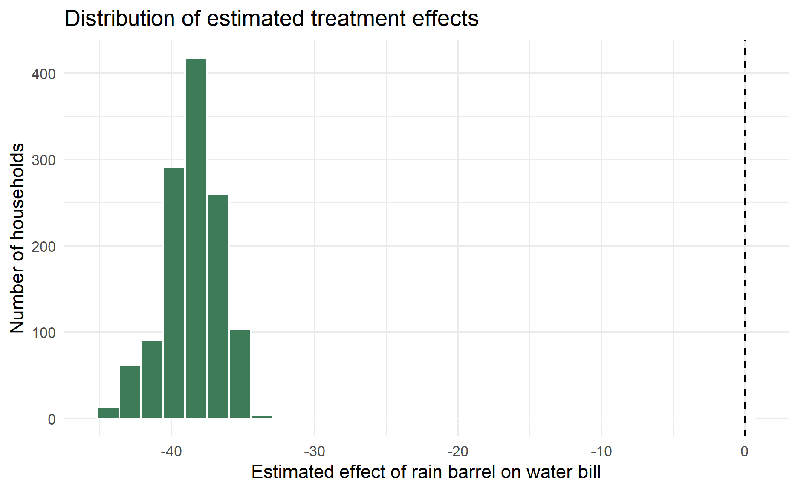
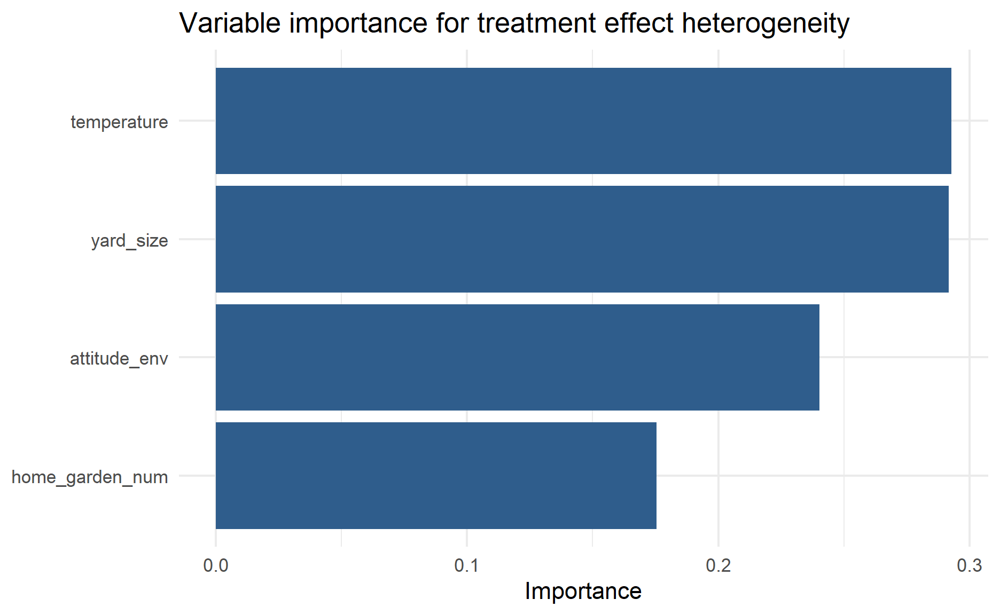
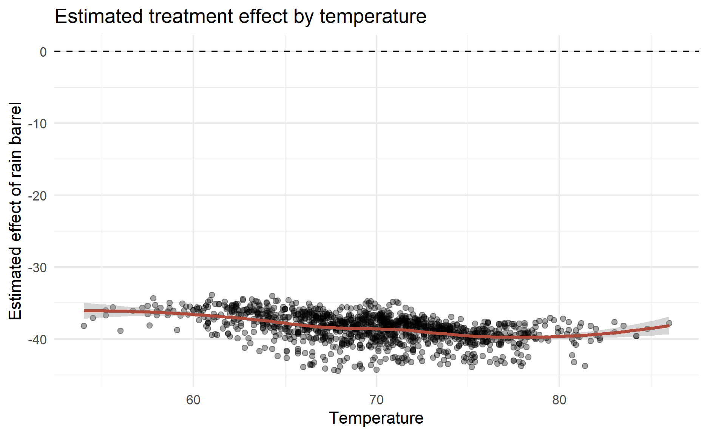
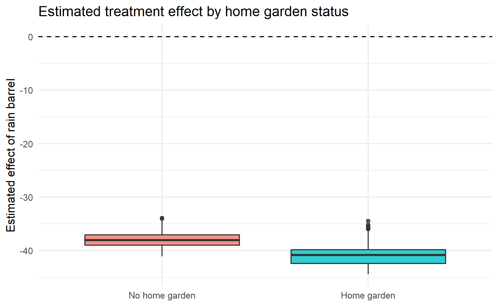

Introduction
Most causal inference examples start with one question:
What is the average effect of a treatment?
For example, “Do rain barrels reduce household water bills?” If we have a treatment group and a control group, we might estimate an average treatment effect (ATE):
\[ ATE = E[Y(1) - Y(0)] \]
where \(Y(1)\) is the outcome if a household uses a rain barrel and \(Y(0)\) is the outcome if the same household does not use one.
That is useful, but often incomplete. The more interesting question is:
For whom does the treatment work best?
Maybe rain barrels are more useful for households with larger yards. Maybe households with home gardens save more water. Maybe hot-weather households benefit differently from mild-weather households.
This is where causal forests are useful. Instead of estimating only the average treatment effect, a causal forest estimates a conditional average treatment effect (CATE):
\[ \tau(x) = E[Y(1) - Y(0) \mid X = x] \]
In plain English, \(\tau(x)\) is the treatment effect for observations with characteristics \(x\).
What is a causal forest?

Photo by Jeremy Bishop on Unsplash
A causal forest is an extension of the random forest idea for causal inference. A normal random forest predicts an outcome, such as water bill. A causal forest predicts how much the treatment changes the outcome.
The method was developed by Wager and Athey in their paper on heterogeneous treatment effects using random forests, and later generalized in the generalized random forests framework. In R, the most common implementation is the grf package.
The key idea is simple:
- Split the data into many trees.
- Find groups of observations where the treatment effect appears different.
- Average across many trees to get a more stable estimate.
- Return an estimated treatment effect for each observation.
The important difference from a normal decision tree is the splitting target. A prediction tree asks:
Which split best predicts \(Y\)?
A causal tree asks:
Which split best separates observations with different treatment effects?
For example, a causal tree might learn that rain barrels have a stronger effect among households with high outdoor water use. A causal forest grows many such trees and averages across them.
Concepts to know
Potential outcomes
For each unit, there are two possible outcomes:
- \(Y(1)\): the outcome if treated.
- \(Y(0)\): the outcome if untreated.
We only observe one of them. A household either used a rain barrel or did not. We do not observe the same household in both worlds.
This is the fundamental missing-data problem in causal inference.
ATE, CATE and HTE
The average treatment effect (ATE) is the average effect across the population:
\[ E[Y(1) - Y(0)] \]
The conditional average treatment effect (CATE) is the effect for a subgroup or type of observation:
\[ E[Y(1) - Y(0) \mid X = x] \]
The phrase heterogeneous treatment effects (HTE) means that the treatment effect varies across people, households, customers, patients, schools, or regions.
Confounding
Causal forests do not remove the need for causal thinking. If treatment assignment is confounded, the forest can learn biased treatment effects very confidently.
In this post’s example, households with rain barrels may already be more environmentally conscious, have different yard sizes, or live in different temperature conditions. These factors may affect both treatment assignment and water bill.
To interpret the results causally, we need the usual observational causal inference assumption:
\[ \{Y(1), Y(0)\} \perp W \mid X \]
This means treatment assignment \(W\) is as-if random after conditioning on observed covariates \(X\). This is also called unconfoundedness or selection on observables.
Overlap
For every type of observation, we need some treated and untreated units:
\[ 0 < P(W = 1 \mid X = x) < 1 \]
If all large-yard households use rain barrels and no small-yard households use them, the model has little basis for comparing treated and untreated households at each yard size.
Honesty
Causal forests commonly use honest splitting. This means one part of the data is used to decide where trees split, and another part is used to estimate effects inside the leaves.
This reduces adaptive overfitting. The tree is less likely to create a subgroup because of random noise and then estimate the treatment effect using the same noise.
The grf::causal_forest() documentation uses honesty by default.
Orthogonalization
Modern causal forests also estimate nuisance functions:
- \(E[Y \mid X]\): expected outcome given covariates.
- \(E[W \mid X]\): treatment propensity given covariates.
The forest then focuses on residual variation in treatment and outcome. This is related to double machine learning ideas and makes the estimate more robust to flexible adjustment for covariates.
How does a causal forest work?
At a high level, the algorithm works like this:
- Estimate the baseline outcome model \(E[Y \mid X]\).
- Estimate the treatment propensity model \(E[W \mid X]\).
- Grow many honest causal trees.
- At each split, prefer splits that separate observations into groups with different treatment effects.
- For a new observation, drop it down every tree.
- Use nearby observations in the same leaves to estimate \(\tau(x)\).
- Average across trees to get a CATE estimate.
The output is not just one coefficient. It is a vector of treatment-effect estimates, one for each observation.
Pros and cons
Pros
- It estimates treatment effect heterogeneity without manually specifying every interaction.
- It can handle many covariates and nonlinear relationships.
- It gives unit-level CATE estimates that can be summarized into subgroups.
- It works well as an exploratory tool after a randomized experiment or careful observational design.
- The
grfpackage provides useful extras such as average treatment effects, variable importance, calibration tests, and confidence intervals.
Cons
- It still relies on causal assumptions. A causal forest is not a causal discovery machine.
- Results can be hard to explain if the forest finds complex heterogeneity.
- It usually needs a reasonably large sample, especially if treatment effects are subtle.
- Weak overlap can make subgroup effects unstable.
- Variable importance tells us which variables helped split the forest, but it is not the same as a clean causal explanation of why effects differ.
- CATE estimates can be noisy at the individual level, so it is often better to interpret grouped patterns rather than one person’s estimate.
Actual use cases
Causal forests are most useful when the average effect is not enough.
Common use cases include:
- Education: Athey and Wager applied causal forests to the National Study of Learning Mindsets to study which students benefited more from a growth-mindset intervention (paper).
- Medicine and clinical trials: Researchers use causal forests to explore which patients benefit most from a treatment, especially when traditional subgroup analysis would require too many pre-specified interactions.
- Marketing and uplift modeling: Companies may want to target customers who are likely to change behavior because of a campaign, not customers who would buy anyway.
- Public policy: Analysts can estimate whether an intervention works differently across regions, income groups, demographic groups, or baseline risk levels.
- Urban and spatial policy: Recent work has used causal machine learning to estimate heterogeneous effects in spatial and local policy settings, where average effects may hide important local variation.
The common theme is personalization. Causal forests are useful when the decision is not just “does this work?” but “who should receive this?”
Demonstration in R
In this demonstration, I will use the rain-barrel observational data in this folder.
The outcome is water_bill. The treatment is whether a household uses a rain barrel. The available covariates are yard size, home garden status, environmental attitude, and temperature.
barrels_obs <- read_csv("data/barrels_observational.csv") %>%
mutate(
barrel = fct_relevel(barrel, "No barrel"),
home_garden = fct_relevel(home_garden, "No home garden")
)
glimpse(barrels_obs)Rows: 1,241
Columns: 9
$ id <dbl> 1, 2, 3, 4, 5, 6, 7, 8, 9, 10, 11, 12, 13, 1…
$ water_bill <dbl> 212.73, 258.76, 156.49, 254.84, 194.78, 201.…
$ barrel <fct> Barrel, No barrel, Barrel, No barrel, Barrel…
$ barrel_num <dbl> 1, 0, 1, 0, 1, 1, 0, 0, 1, 0, 1, 1, 1, 1, 1,…
$ yard_size <dbl> 25811, 39479, 13297, 28259, 21479, 28906, 70…
$ home_garden <fct> No home garden, Home garden, No home garden,…
$ home_garden_num <dbl> 0, 1, 0, 0, 0, 1, 0, 0, 1, 1, 0, 0, 0, 0, 0,…
$ attitude_env <dbl> 3, 7, 7, 2, 5, 8, 3, 4, 8, 9, 7, 8, 6, 6, 3,…
$ temperature <dbl> 81.1, 65.1, 75.9, 70.6, 66.7, 75.3, 66.3, 71…Before fitting anything, it is worth checking the raw treatment-control difference.
barrels_obs %>%
group_by(barrel) %>%
summarise(
n = n(),
avg_water_bill = mean(water_bill),
sd_water_bill = sd(water_bill),
avg_yard_size = mean(yard_size),
avg_attitude_env = mean(attitude_env),
avg_temperature = mean(temperature),
pct_home_garden = mean(home_garden_num),
.groups = "drop"
)# A tibble: 2 × 8
barrel n avg_water_bill sd_water_bill avg_yard_size
<fct> <int> <dbl> <dbl> <dbl>
1 No barrel 736 225. 28.9 20167.
2 Barrel 505 195. 29.0 21174.
# ℹ 3 more variables: avg_attitude_env <dbl>, avg_temperature <dbl>,
# pct_home_garden <dbl>In this dataset, households with rain barrels have lower observed water bills on average. But this raw comparison is not yet a causal estimate because rain-barrel users also differ in covariates such as environmental attitude and temperature.
Fit a causal forest
The grf::causal_forest() function expects:
X: covariate matrix.Y: numeric outcome.W: numeric treatment indicator.
X <- barrels_obs %>%
select(yard_size, home_garden_num, attitude_env, temperature) %>%
as.matrix()
Y <- barrels_obs$water_bill
W <- barrels_obs$barrel_num
set.seed(123)
barrel_forest <- causal_forest(
X = X,
Y = Y,
W = W,
num.trees = 4000,
tune.parameters = "all",
seed = 123
)
barrel_forestGRF forest object of type causal_forest
Number of trees: 4000
Number of training samples: 1241
Variable importance:
1 2 3 4
0.292 0.175 0.240 0.293 Here, \(W = 1\) means the household uses a rain barrel. Therefore, the estimated treatment effect is:
\[ E[\text{water bill with barrel} - \text{water bill without barrel} \mid X] \]
A negative estimate means the model thinks the rain barrel reduces the water bill.
Estimate the average treatment effect
average_treatment_effect(barrel_forest) estimate std.err
-38.6027989 0.9436829 This gives the estimated average effect of rain barrels after adjustment by the forest.
If the estimate is negative, the interpretation is:
After adjusting for the observed covariates, households with rain barrels are estimated to have lower water bills on average.
The confidence interval matters. If it is wide, we should be cautious about claiming a precise effect.
Estimate household-level CATEs
cate_hat <- predict(barrel_forest)$predictions
barrels_cf <- barrels_obs %>%
mutate(cate = cate_hat)
summary(barrels_cf$cate) Min. 1st Qu. Median Mean 3rd Qu. Max.
-44.41 -39.67 -38.42 -38.56 -37.26 -33.91 The cate column is the estimated treatment effect for each household.
Again, because the treatment is rain-barrel use, more negative CATE values mean larger expected bill reductions.
Plot the treatment effect distribution
barrels_cf %>%
ggplot(aes(x = cate)) +
geom_histogram(bins = 30, fill = "#3E7C59", color = "white") +
geom_vline(xintercept = 0, linetype = "dashed") +
labs(
title = "Distribution of estimated treatment effects",
x = "Estimated effect of rain barrel on water bill",
y = "Number of households"
) +
theme_minimal()
This chart shows whether the forest thinks the effect is similar for everyone or varies meaningfully across households.
Which variables drive heterogeneity?
importance_tbl <- tibble(
variable = colnames(X),
importance = variable_importance(barrel_forest)
) %>%
arrange(desc(importance))
importance_tbl# A tibble: 4 × 2
variable importance[,1]
<chr> <dbl>
1 temperature 0.293
2 yard_size 0.292
3 attitude_env 0.240
4 home_garden_num 0.175importance_tbl %>%
ggplot(aes(x = reorder(variable, importance), y = importance)) +
geom_col(fill = "#2F5D8C") +
coord_flip() +
labs(
title = "Variable importance for treatment effect heterogeneity",
x = NULL,
y = "Importance"
) +
theme_minimal()
This does not mean the top variable causes the effect to differ. It means the forest used that variable often when searching for heterogeneous treatment effects.
Explore CATE by covariates
barrels_cf %>%
ggplot(aes(x = temperature, y = cate)) +
geom_point(alpha = 0.35) +
geom_smooth(method = "loess", se = TRUE, color = "#B04A3A") +
geom_hline(yintercept = 0, linetype = "dashed") +
labs(
title = "Estimated treatment effect by temperature",
x = "Temperature",
y = "Estimated effect of rain barrel"
) +
theme_minimal()
barrels_cf %>%
ggplot(aes(x = home_garden, y = cate, fill = home_garden)) +
geom_boxplot(alpha = 0.8, show.legend = FALSE) +
geom_hline(yintercept = 0, linetype = "dashed") +
labs(
title = "Estimated treatment effect by home garden status",
x = NULL,
y = "Estimated effect of rain barrel"
) +
theme_minimal()
These plots help turn individual-level CATE estimates into patterns that are easier to understand.
Compare high-effect and low-effect groups
One useful way to summarize a causal forest is to rank observations by predicted treatment effect.
Since negative values mean larger bill reductions, the first group below contains households with the strongest predicted savings.
barrels_cf %>%
mutate(effect_group = ntile(cate, 4)) %>%
group_by(effect_group) %>%
summarise(
n = n(),
avg_cate = mean(cate),
avg_yard_size = mean(yard_size),
pct_home_garden = mean(home_garden_num),
avg_attitude_env = mean(attitude_env),
avg_temperature = mean(temperature),
.groups = "drop"
)# A tibble: 4 × 7
effect_group n avg_cate avg_yard_size pct_home_garden
<int> <int> <dbl> <dbl> <dbl>
1 1 311 -41.1 25616. 0.666
2 2 310 -39.0 16707. 0.0677
3 3 310 -37.9 17251. 0.0355
4 4 310 -36.3 22716. 0.0871
# ℹ 2 more variables: avg_attitude_env <dbl>, avg_temperature <dbl>This kind of table is often more useful than looking at 1,241 individual CATE values.
Check calibration
The grf package also provides a calibration test.
test_calibration(barrel_forest)
Best linear fit using forest predictions (on held-out data)
as well as the mean forest prediction as regressors, along
with one-sided heteroskedasticity-robust (HC3) SEs:
Estimate Std. Error t value Pr(>t)
mean.forest.prediction 1.000639 0.024064 41.5826 <2e-16 ***
differential.forest.prediction 0.498486 0.496377 1.0042 0.1577
---
Signif. codes: 0 '***' 0.001 '**' 0.01 '*' 0.05 '.' 0.1 ' ' 1This is a diagnostic, not a proof. It helps assess whether the forest has captured meaningful treatment heterogeneity, but the result still depends on the study design and causal assumptions.
Practical workflow
When using causal forests in a real project, I would usually follow this workflow:
- Draw the causal diagram first.
- Decide which covariates should be adjusted for.
- Check overlap between treatment and control groups.
- Fit a simple baseline model first.
- Fit the causal forest.
- Estimate the ATE.
- Study CATE patterns by interpretable groups.
- Avoid over-interpreting single-row treatment effects.
- Validate findings with domain knowledge or a future experiment.
When should we use it?
Use a causal forest when:
- You care about treatment effect heterogeneity.
- You have enough data to estimate subgroup patterns.
- You have credible treatment-control comparisons after adjustment.
- You want flexible interactions without specifying all of them manually.
Do not use it as the first tool when:
- The causal design is unclear.
- There is poor overlap.
- The sample is tiny.
- You only need one clean average effect.
- The audience needs a simple, fully transparent parametric model.
Conclusion
Causal forests are a powerful bridge between causal inference and machine learning.
They keep the causal question at the center:
What is the effect of the treatment?
But they add a machine-learning layer:
How does that effect vary across observations?
In the rain-barrel example, the average effect tells us whether rain barrels reduce water bills overall. The causal forest goes further by estimating which kinds of households are expected to benefit more.
The main caution is that causal forests do not rescue a weak causal design. They are best seen as a flexible estimator for a well-defined causal question, not a substitute for thinking carefully about treatment assignment, confounding, and overlap.
Thanks for reading the post until the end.
Feel free to contact me through email or LinkedIn if you have any suggestions on future topics to share.
Refer to this link for the blog disclaimer.
Till next time, happy learning!